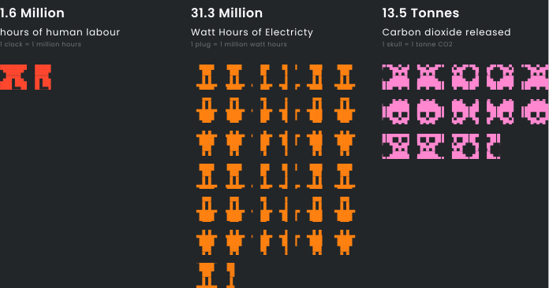

Tech Sector vs. Planet
Is the tech sector killing our planet and if so, what changes can we make?

As the backbone of the information age, the tech sector has been growing exponentially. Unfortunately, it could be argued that the time and money we save in this current moment is stolen from our futures. Our daily activities produce greenhouse gases in such vast amounts that future generations of humans may not survive. If we continue living this way, by 2030, “we will be in a position where we set off an irreversible chain reaction beyond human control, that will most likely lead to the end of our civilisation as we know it.”
This research aims to identify the impact of the tech sector on our planet and establish the most sustainable digital practices in 2020. To do this, it analyses software used by prominent Belfast based tech companies. This data was gathered through a surveymonkey questionnaire, broken down into 9 main categories of tool use case. The questionnaire was completed by 32 companies from a list of Northern Ireland based companies with designers, crowdsourced by members of popular Slack group, NI Design Chat. Results were rounded to the nearest 0.5%.
Among those answering were employees of: Niice, Little Thunder, Dawson Andrews, Kainos, Deloitte, Whitespace, Instil, Big Motive, Synergy Learning, and PWC.
This research will explain the source of carbon emissions, examine what digital products could contribute to that source, and suggest more carbon efficient alternatives.
The findings of this research are broken down into 5 key sections.
- 1. What is climate change?
- 2. Does cloud computing contribute to climate change?
- 3. Do coding languages contribute to climate change?
- 4. Does embodied carbon contribute to climate change?
- 5. Does planned obsolescence contribute to climate change?
This section defines climate change and explains what we can do to avoid climate breakdown.
"The earth has experienced five mass extinctions prior to the one we are currently living though now, each so complete a wiping of the fossil fuel record that it functioned as an evolutionary reset" . It’s like we’re at level 99 of a game. Think of greenhouse gases as expansion packs. If we continue adding them at the rate we have been over the past 80 years, the climate will force us to go back to level 1. The earth will go on: we will die.
To put it succinctly, global warming occurs when the sun's heat energy cannot escape the earth's atmosphere. The earth is forced to change this energy into another form of energy: this is how weather patterns are created. Some of this energy goes back out into space through the energy escape hatch, but this hatch is becoming increasingly blocked by greenhouse gases. As more and more heat is trapped, weather patterns get more and more extreme.
If we raise global temperature by 1.5C by 2030, “we will be in a position where we set off an irreversible chain reaction beyond human control, that will most likely lead to the end of our civilisation as we know it.”
We will die from starvation. We will die from asphyxiation. We will perish in fires. We will drown in floods.
We have the power to end these atrocities
Our lives do not need to end in suffering.
In fact, we hold the solutions to these problems in our hands.
To avoid the chain reaction of doomsday scenarios set off by more than 1.5 degrees of warming, we must put an immediate stop to greenhouse gas emissions
This doesn’t mean we need to stop driving, developing our world or exchanging goods. We must restructure our world around sustainability.
“Sustainability is most often defined as meeting the needs of the present without compromising the ability of future generations to meet their needs. It has three main pillars: economic, environmental, and social. These 3 pillars are informally referred to as people, planet and profits.”
Spearheaded by Greta Thunberg, many people around the world have been calling for big companies to stop processes which will inevitably lead to climate collapse. As a result, sustainability has ascended to the top of priority lists of corporate giants such as Walmart, McDonalds and Google. The aim is to reach a near perfect equilibrium across all 3 pillars.
In 2020 alone, the tech sector contributed an outrageous 3.6% to global greenhouse gas pollution. That number appears deceptively low and may suggest the tech sector does not have responsibility in this area. However, this figure is equal to the amount of greenhouse gas pollution produced by fuel from the >aviation industry - an industry which is often cited as one of the most environmentally problematic. In a worst case scenario this figure could rise to 14% by 2040.
In order for the tech industry to enforce the environmental pillar, the research in the following sections aims to establish the contribution of the tech industry to global warming through the lens of carbon emissions.
Today, cloud computing forms the very basis of the internet. “Cloud Computing is the practice of using a network of remote servers to store, manage, and process data.” Every time we query google or reply to a message in Slack we download and upload information to servers around the world, a process known as “data transfer”. This information is computed in a data center, defined as “a large group of networked computer servers” Today, there are approximately 500 data centers which store our information.
Although data centers are branded as “the cloud”, they are not metaphysical bodies in the stratosphere. When we save data to the cloud, it is in fact transferred to very physical data centers.
In 2019 it was estimated across all data centers we are storing 10–50 zettabytes of data. “A zettabyte is a measure of storage capacity, which equals 1000⁷ (1,000,000,000,000,000,000,000 bytes). By 2025 this is estimated to grow to the range of 150–200 zettabytes.” An Atlanta based hyperscale data farm owned by H5 Data Centers, is nearly 186,000m2 large - packed with physical servers. That’s nearly 35 football fields of servers. This is precisely what makes the 150–200 zettabytes so concerning.
Harnessing immense computational power, data centers consume colossal amounts of electricity. Moreover, when we transfer data it travels through a network of cables, once again powered by electricity. This electricity is derived from the
The entire infrastructure of technology relies on the power grid. “The power grid is a network of power lines and associated equipment used to transmit and distribute electricity over a geographic area.” Between July 2019 and June 2020, Northern Ireland consumed 7,505 Gigawatt hours (GWh) of electricity. 52.3% (3928 GWh) of this electricity came from fossil fuels. Fossil fuels produce carbon when they are burned. 1 gigawatt hour of electricity produced from fossil fuels generates 430 tonnes of CO2.Establishing exactly how much electricity the internet uses is an impossible task, but for this example we will use the 2% of global electricity usage figure from the 2020 IEA report.
NI internet related electricity usage: 2% of 7,505 GWh = 150.1 GWh
NI internet electricity from fossil fuels: 52.3% of 150.1GWh = 78.8GWh
NI carbon emitted through internet related electricity usage: 78.8GWh x 430 tonnes of CO2 = 33,890.9 tonnes CO2
NI produces 33,890.9 tonnes of CO2 through internet related activities. If the grid was powered completely by renewable energy which doesn’t produce CO2, that number would be 0.
In order to lower carbon emissions significantly, we must take a look at how and why we use cloud computing. Go to Pull Requests above to find out.
Solution 1: Stop gathering unstructured data
“Unstructured data is information that either does not have a pre-defined data model or is not organized in a pre-defined manner.” According to market research company IDC, 90% of unstructured data is never analysed. This data is stored in server farms, using up electricity every hour of every day of every year until it is disposed of.
100% of the survey respondents said their company usesGoogle Analytics. 14% said they use Hotjar and 9% of businesses use Salesforce. All these tools contribute to the creation of unstructured trash data.
Before embedding Google Analytics or Hotjar out of habit, we can run an ideation session (by ourselves or with our team) to determine what heuristics will help us better understand user behaviour in order to improve our product. This will shed light on exactly what data needs to be synthesised once it is collected, speeding up our workflow. Once we get what we need out of it: scrap it, don’t store it. By doing this, we decrease the amount of data we store in data centers, in turn using less servers, which means using less electricity and therefore producing less carbon.
Solution 2: Stop using tools which automatically transfer data
Tools like Google Docs, Notion and Slack automatically store data in the cloud make us feel as if we aren’t producing digital garbage every second.
Inspecting network downloads/uploads using the process monitoring tool, Activity Monitor , we can determine in this session Chrome, Notion & Slack had the highest rate of data transfers. 87.5% of companies use Slack. 22.5% of companies use Notion.
According to a test using network monitoring software Little Snitch , all of the above apps transfer data to farms located in Kansas and Los Angeles.
I used Notion to create a wiki for this dissertation. The wiki was comprised of links, text and roughly 20 images. I exported the data and found I’d generated 7.2MB in 1 week . In contrast to the link based wiki, Gerry McGovern’s book, “World Wide Waste” which covers this topic in much more depth weighs only 348 KB. Moreover, it isn’t transferred back and forth between our computer and Kansas, creating unnecessary pollution.
To cut out the incessant data transfer of cloud note taking apps like Notion, we can switch to products like Apple Notes or Microsoft OneNote which give us the option to opt out of cloud storage.
The same logic can be applied to storing and creating data using the Google Suite. While Google data centers are powered by renewable energy, when we transfer data, carbon is still generated in the power grid. 75% of Belfast based companies use Google Docs, 55% Google Sheets, 55% Google Slides and 13% Forms.
If we don’t need to share a document with the wider team, there is no need to store it in a data center. Instead, we can use local applications like the Microsoft or Apple suite cancelling out the transfer of data and creation of CO2 altogether. If we decide we do need to share the document, we can always upload it to Google Drive.
If we are already storing a lot of documents in Google Drive, we can employ a methodology such as Gerry McGovern's Top Tasks Endorsed by Toyota and IBM, this approach helps us determine our users' goals. By employing this tactic, we can get rid of data which doesn't bring the user and by proxy, ourselves, towards achieving these goals. As an added bonus we are improving our teams efficiency; no longer needing to wade through irrelevant documents to get to what we need. [G McG]
Another step we can take is using Creative Cloud offline. 39% of Belfast based companies use Illustrator, 23% use AfterEffects and 19% use Photoshop. All Adobe Software is installed locally, however it automatically runs Creative Cloud in the background. Using Activity Monitor once again, we can determine Creative Cloud and it’s counterparts were among the most power and network hungry processes during that session. While .psd & .ai files are very large, they become much smaller once exported.
To avoid this transfer of information, we can store working files locally, and share compressed .jpg or .svg files with our team only when necessary.
So far we have covered the data we store in our applications’ databases and that which we gather with regard to application usage. What about the actual applications? Today, most applications are built on top of a framework.
39% of all websites are developed on top of Wordpress.Wordpress relies on PHP, a backend language which combines content received through an API with HTML, then sends this information to our browser. This process repeats every time we load in a page. Etsy.com is one example of such a website.
Every time we request a new page on Etsy, the entire DOM for that specific page is fetched and downloaded from the server. Availing of Google Chrome plugin Data Usage , I took measurements for 4 pages to establish how much data is transferred per download. The results were 2mb, 2mb, 4mb, 1mb.
This makes the average Etsy page 2.25 MB. According to similarweb.com, in the last 6 months Etsy got 358,880,000 visits. Visitors viewed 6.6 pages per visit. This means some 5,329,368,000 MB were transferred between Etsy’s hosting provider and it’s users.
(6.6 pages x 2.25 MB) x 358,880,000 visits = 5,329,368,000 MB = 5,329,368 GB
In World Wide Waste, Gerry McGovern estimates that the transfer of one gigabyte (GB) of datarequires about 0.015 kWh of electricity and causes 0.0042 kg of CO2 pollution. Using this methodology, we can establish Etsy produces 22383.35 kg CO2Eq in 6 months.
5,329,368 GB x 0.0042 kg CO2Eq = 22383.35 kg CO2Eq = 22.38 tonnes CO2Eq
There are currently 1,000,000,000 websites on the internet. If 39% are made using Wordpress, there are 390,000,000 Wordpress sites. If all of them were as popular as Etsy, we would be producing 8,728,200,000 tonnes CO2Eq in 6 months.
39% of 1 billion websites = 390,000,000 Worpress websites
390,000,000 Worpress websites x 22.38 tonnes CO2Eq = 8,728,200,000 tonnes CO2Eq
Solution: Choose an energy efficient framework
React.js is an increasingly popular framework. In most cases this language renders html pages server side. The key difference between react and php applications, is that PHP applications render page by page on a request basis, while react sends code for the entire application on the initial request. When we navigate to a new page, the react application populates content data by contacting a backend API, but the bones of the website stay in place from the initial download. Reddit is one example of an application which uses this technology.Using the same methodology as the previous framework example, the download sizes of 4 Reddit pages were 637KB, 419KB, 11KB and 22KB. This makes the average Reddit page 0.27225MB.
Comparing this to Etsy’s 2.25MB average, we can conclude the amount of data transferred on average by react based Reddit, is 10 times smaller than PHP based Etsy. If less data is transferred, less electricity is used and in turn, less carbon is emitted. This makes react a much more environmentally friendly framework.
Section 2 established that data centers produce carbon through electricity consumption, but that is not the end. Another complication with data centers is the hardware they use; namely, servers. On average, servers are replaced every 3 years.
When we manufacture a product, it holds embodied carbon until it is disposed of. “Embodied carbon is the total greenhouse gas emissions generated to produce a built asset.” To study this effect in terms of servers, the 2019 R640 Dell Server will be used as an example. It takes 1283kg CO2eq to manufacture this server. It has a lifespan of 4 years, so theoretically it emits 320kg CO2eq every year.
1283kg CO2eq / 4 years = 320kg CO2eq emitted per year
It’s also expected to consume 1760.3 kWh/year. The average carbon intensity in the EU is 0.276 kg CO2eq/kWh. The total carbon cost is going to be 805 kg CO2eq/year.
320 CO2eq + (0.276 kg CO2eq/kWh * 1760.3kWh/year) = 805 kg CO2eq/year.
If we kept this server for 5 years instead of 4, it would have an embodied carbon cost of 257kg CO2eq, meaning it would emit 743kg CO2eq/year.
257 CO2eq + (0.276 kg CO2eq/kWh * 1760.3kWh/year) = 743kg CO2eq/year.
Amazon Web Services (AWS) is one of the most popular web hosts in the world. Subpose AWS has 1.3 million servers and they are all the 2019 R640 Dell Server. Kept for 4 years, they emit a collective 4,186,000,000kg CO2eq. Kept for 5 years, in 4 years they emit 3,863,600,000 kg CO2eq. That’s 322,400,000 kg CO2eq less.
(805 CO2eq * 4 years) * 1,300,000 servers = 4,186,000,000 kg CO2eq
(743 CO2eq * 4 years) * 1,300,000 servers = 3,863,600,000 kg CO2eq
4,186,000,000 kg CO2eq - 3,863,600,000 kg CO2eq = 322,400,000 kg CO2eq
Solution: Choose a Green Host
Unless we work in a data center or for a server manufacturing company, we can’t control the amount of carbon embodied in the devices which hold our data. However, we can control whether we host with companies whose data centers emit CO2.
AWS is used by 63% of Belfast based companies. AWS data centers are powered by renewable energy in only 4 regions. In other regions, it is estimated only 30%-50% of the energy which powers these centers is renewable.
Google Cloud is used by 16% of Belfast based companies, and Azure by 5%. Both of these companies qualify as green hosts, meaning they use renewable energy or offset their emissions. As previously calculated, in a hypothetical scenario, AWS could produce 4,186,000,000 kg CO2eq in 4 years. If every company which relies on AWS switched to Google or Azure, that number would be 1283kg CO2eq, accounting only for the embodied carbon stored in the physical server.
A list of other green hosting providers we can switch to can be found at https://www.thegreenwebfoundation.org/directory.
It is becoming increasingly evident that tech manufacturing companies produce assets with a fixed term shelf life. Moore's Law states “the number of transistors on a microchip doubles every two years, though the cost of computers is halved.” This means that every 2 years computers become twice as fast, while their cost is cut in half. The side effect of these exponential advancements is planned obsolescence. “Planned obsolescence describes a strategy of deliberately ensuring that the current version of a given product will become out of date or useless within a known time period.” As of 2019, 50 tonnes of electric device waste were produced annually. This is the result of planned obsolescence.
Planned obsolescence does not stop at hardware. On the contrary, the effect is crystal clear in software development too. Tactics like agile development, sprints and iteration force us to sink more time, energy and electricity to develop minimum viable products round the clock. We create products we scrap with little foresight, financial gain being the only performance indicator.
One example is Internet Explorer 11 (IE11). Subporting software in IE11 is a running joke amongst developers. The browser is outdated and doesn’t subport a lot of essential contemporary functionality. This is concerning, because IE was released only 7 years ago, on October 17, 2013. In 2021, it is becoming deprecated. That’s a lifespan of only 8 years.
Behind every product there are hours of work and gigawatts of power. When we kill IE, what are we really putting a line through?
It is estimated that 1000+ developers worked on IE11. Let’s assume each developer worked for 7 hours a day for 46 weeks. That’s 1.6 million hours of human life.
Let’s say every employee used a Lenovo w530 laptop
which has a battery life of 6 hours and 23 minutes , so it needs to be charged once a day for an average of 4 hours at (20 V x 8.5 A = 170W) 170 watts
4 hours x 170 watts = 680Wh
680Wh x 1000 people = 680,000Wh every day.
680,000Wh x 46 weeks = 31,280,000Wh
In 2018 it was estimated that 1 gigawatt hour of electricity produced from fossil fuels generates 430 tonnes of CO2. If the electric grid was 100% fossil fuels at the time, that’s 13.45 tonnes of CO2. These figures account for charging the laptop alone, not including electricity needed to power all internet related activities.
31,280,000 Wh = 0.03128 GWh
0.03128 Gwh x 430 tonnes = 13.45 tonnes of CO2
When we make IE obsolete, what we are really disposing of is 1.6 million workforce hours and 31,280,000 Wh of electricity. What we create instead, is a 13.45 CO2 tonne decrease in the quality of life on the only planet in the solar system which subports human life.
Solution 2: Design for longevity
Unlike IE11, we want our products to withstand the test of time. How do we avoid sinking our own, as well as the earth’s resources into a product which doesn’t last?
This is a broad question far beyond sustainability. However, we can narrow it down by looking at constraints which will help us release as little carbon as possible in the process of making a web application. Designers play one of the biggest roles in shaping products, so let’s take a look at what design can do to decrease carbon emissions.
“As a designer, you are the director of carbon emissions” - Asim Hussein, LCAW 2020
Among the participants of the primary research questionnaire, at 52% Sketch is the most popular design software. Figma (39%) is catching up, followed by InDesign (23%), Adobe XD (16%), Abstract (13%) and Zeplin (10%) and Invision (6%).
Wireframes and prototypes are intended to be used only during the build process: once they have served their purpose, they will become obsolete. Thus, they fall into the category of planned obsolescence.
Most of the above software stores our assets in the cloud automatically. Some of us choose to save assets locally, but once we send a link to our team or client to view or collaborate, that asset is stored in the cloud. In the same way as any other web application, this process produces CO2 through the transfer of data like large images, vast amounts of text and complex code.
Instead of surrendering to popular design patterns such as the heavyweight hero banner, we can ask ourselves, “Does an image help the user achieve their goal?” If the answer is “no”, there’s a better way of filling that space: this could be white space, text, a vector graphic and beyond. By doing this, we emit less CO2 in the design process as well as in the future use of the website.
If the image is necessary, we can ask ourselves what kind of image to include. In mockups, a grey placeholder with text or a vector graphic could be enough. If not, we can use an image compressor like imagecompressor.com to make the image smaller. Other tricks include making images black and white, and blurring the background to avail of pixel clustering technologies.
Solution 2: Develop for longevity
Once designs are passed on for development, we can measure their impact on the planet. A solid first step is knowing the carbon footprint of what you’re working on. Developed by Wholegrain Digital, the carbon calculator is a tool which estimates how much carbon your website emits www.websitecarbon.com.
Next, you can analyse the frontend of your application using the Chrome Dev Tools plugin, GreenIT. This plugin provides an Ecoindex rating as well as assessing the application’s performance against an outline of environmental best practices.
From a user experience point of view, you can gauge the value of your product by using the previously mentioned Top Tasks methodology. Once your user's goals are established, you can assess how many steps it takes for a user to achieve their goal, and adjust your application so that time is as short as possible. This means your user is not fumbling around pages of your application, downloading data unnecessarily.
Finally, to figure out exactly how much data your user is downloaded per page, you can use the Chrome plugin Data Usage.
When we deprecate IE, we make obsolete:

Currently, the tech industry is responsible for 3.6% of the world’s carbon emissions. This paper presents a sound basis for how we can begin to offset them:
- design to avoid CO2 emissions
- measure our CO2 emissions
- compress images
- only collect data you need
- use a green hosting provider
- store data locally
- use a framework which transfers the least amount of data possible
Working in the tech industry comes with many challenges as we try to solve problems which other sectors can’t. Aiming for environmental sustainability should not be another obstacle to solving these problems. Rather, we should treat it as a springboard for creative solutions. In the end, creative solutions are already the basis of our everyday job.